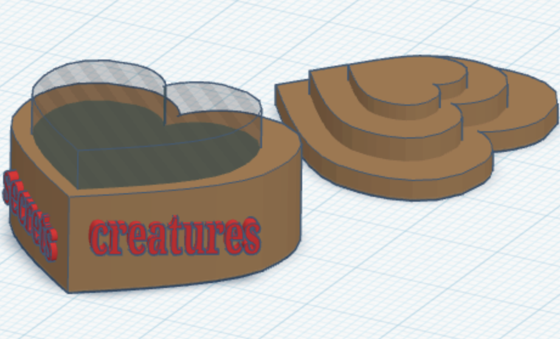
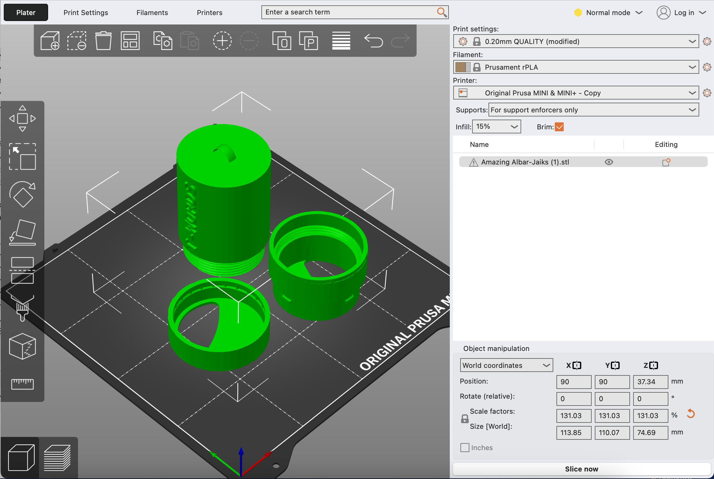
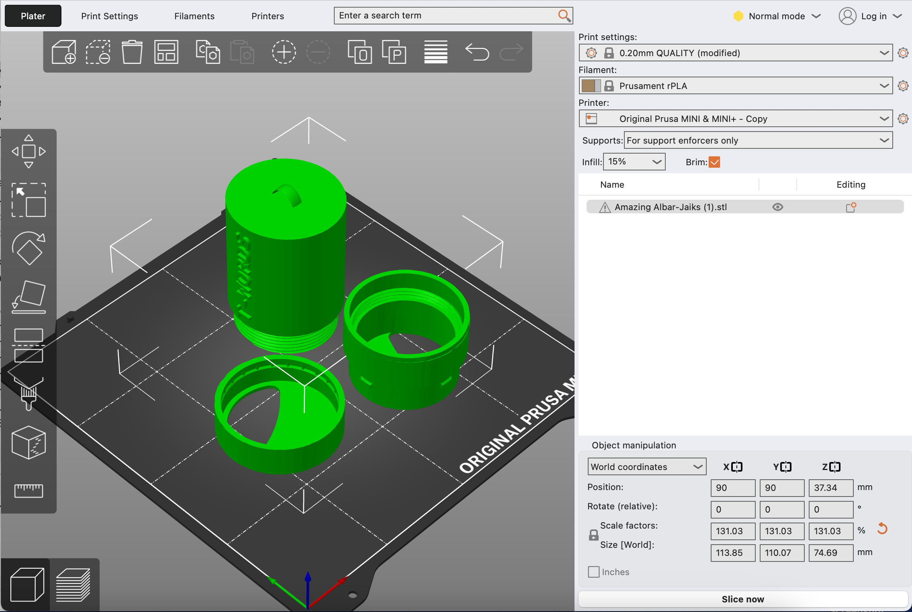
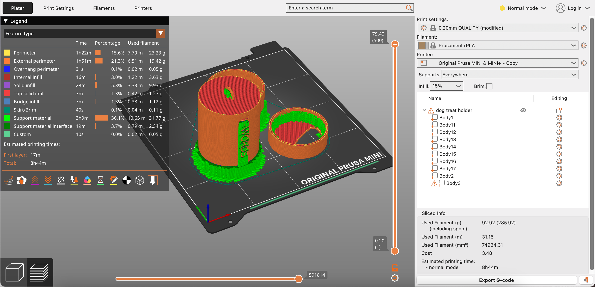
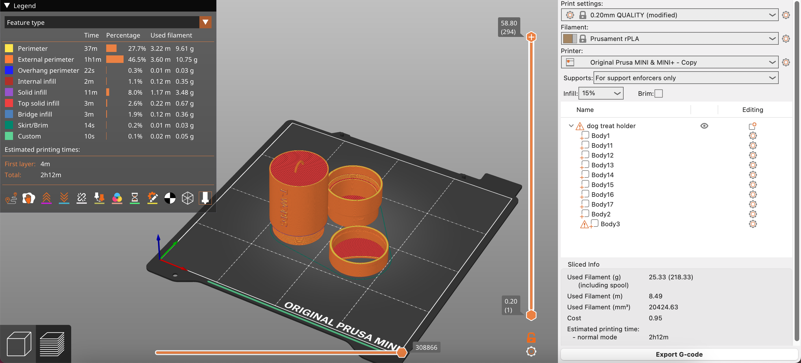
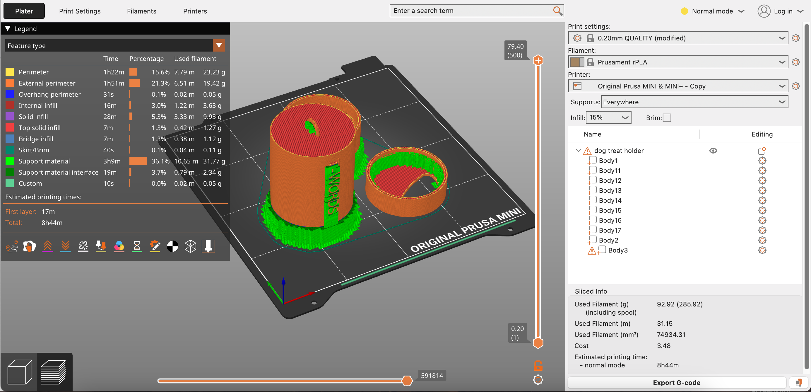
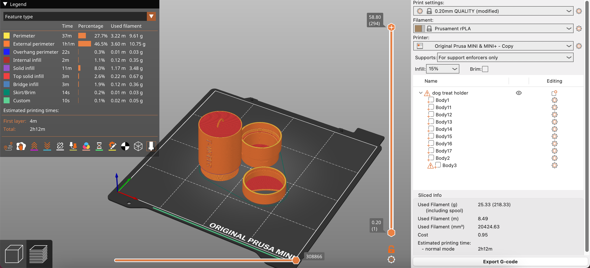

Project 1: Introduction to 3D Printing
Part 1: Nametag
I would consider this print successful, although there are noticeable flaws. It came out legible which is the most important element, but there were noticeable flaws. Mainly I had problems with some stringing that I had to clip off afterward. It’s not the cleanest result but it still serves its purpose. I think if I scaled it up a little then this problem would not be a concern. If I did this again I would also slow down the print speed for cleaner edges, and polish or paint the surface for a more clean appearance.

Part 2: Calibration (“torture”) print
I believe this print went very well, and I'm satisfied enough with the final outcome that it is by far my favorite. I really love the "furry" texture that came out around its ears! These "mini strings" add a great unintended detail. The details turned out really nicely, and the printer handled the overhangs impressively well. The bridges were a little rough, but overall, this was a successful calibration print. If I were to print it again, I might experiment with different settings to see if I could improve the bridge quality even further, but I'm quite pleased with how it turned out.


Part 3: Open-source assistive devices
This print had more challenges. It is supposed to be a light switch extender for people with limited mobility. Unfortunately, some of the supports collapsed inside during printing, leaving it unusable. In the pictures you can see how it will not be able to fit onto a light switch. If I were to print it again, I would increase its size and make supports easier to remove. Despite the failure, it’s a valuable prototype that shows how accessibility and design can work together.

Project 2: Creating & Remixing 3D Designs
CAD Orientation
I have completed the personal portfolio to the extent that it meets all of the requirements, but I still feel like I can add more, and this is not the ultimate representation of how much I have learned in both of these CAD software programs. I feel like I am now very familiar with how to use Tinkercad, and it is very easy to use; however, I also think I have reached the limits of its power. It falls short if I am envisioning something specific in my head to create because I don’t have much control over the details. I still think it is useful if I do not have a certain end goal in place because just playing around with the applications available offers enough creativity that I can create something new. For example, I wanted to curve the edges of the little heart box I made, but no feature in Tinkercad allows the user to do that. After I finished the heart box, I downloaded Fusion, and already I was facing a torrential downpour of problems, with only the download process, because apparently I had downloaded it before and it said I signed in too many times already, and it would not recognize the educational account, and though I had access I am still getting a countdown in Fusion about how many days I have left before it expires. Hopefully, I can figure this out before it expires, and if I lose access to Fusion again. We will see soon…
Design Research and Planning
This is the 3D model I chose to remix:
This is my concept sketch for modifying it:
Tinkercad Remix
This print completed successfully but required extra post-processing. Although it printed cleanly, the tradeoff was an excess of generated supports, and removing them took around 30 minutes. I also had to sand down the sides to make the twisting mechanism work smoothly, which ultimately resulted in a functional model.
 


Fusion Remix
I encountered multiple failed prints at first. The eventual successful one was a 4-hour print completed in the MakerLab; the issues seemed related to bed adhesion since earlier attempts failed early in the print. When I altered a gap between components, it must have improved stability. I also had to remove supports, but these were much easier to detach, and there was no sanding involved.
 



Project 3: Form and Fit for Electronics
Assembly
Design and 3D Print an Enclosure
Design and Laser Cut an Enclosure
Project 4: Design for Repair
Assembly
Project 5: Evidence of Design Scavenger Hunt
Designs for access
Designs against access
Design priorities in the built environment